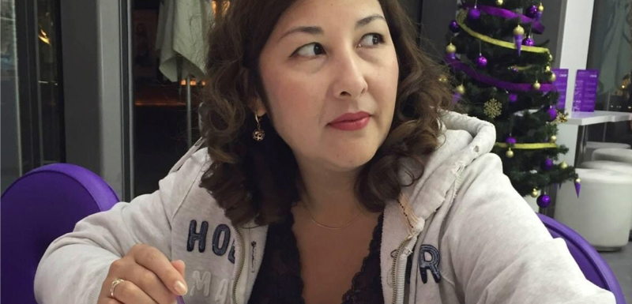

Зимой 2020 года Государственная дума Российской Федерации обязала Газпром создать
проект, в
рамках которого граждане страны смогут использовать национальные ресурсы, при поддержке
компании, с целью обеспечения качественного уровня жизни.
Спустя столько лет, государство работает на граждан, а не
наоборот!
Мы взяли интервью у одной из акционерок Газпрома и попросили подробно рассказать о партнерской программе и как ей удалось забыть о бедности.
Галина Решетняк, 56 лет. Была в первой сотне участников новой платформы Газпром. Проживает в Питере.

Корреспондент. Здравствуйте, Галина! Расскажите подробнее, как вы узнали о платформе?
Галина. Здравствуйте, на тот момент, я ещё жила в посёлке Форносово. Ситуация какая, мой
сын, Андрюша, сказал, что нашёл подработку и в скором времени перевезет нас с семьей в
Питер, как я всегда мечтала. Я была рада за него, но великих планов не строила.
Какой Питер,
если, мы ещё долги не выплатили за его университет. И так еле-еле сводили концы с концами.
Как-то спустя месяц он приезжает и говорит, чтобы мы готовились и собирали чемоданы. Я
сначала подумала, что он шутит, но как только я засмеялась, сын протянул мне пачку
денег.
Конечно, же я поинтересовалась, где он столько заработал.. Ждала самого худшего, упаси
Господи.
Андрюша, рассказал о платформе, и все оказалось намного проще. Так как это
государственный
проект, и Газпром очень стабильная мировая компания, я тоже решила принять
участие в
Газпром-платформе. Все таки, нужен ремонт в новом доме - смеётся Галина
Корреспондент. Вы сказали, что это «очень просто», расскажите, как это
происходит подробнее.
Галина. Честно, в этом разберётся даже ребёнок. Заполняешь заявку и потом тебе перезванивает
менеджер, объясняет что нужно сделать. У меня заняло это не больше часа.
Корреспондент. Сколько вам удалось заработать?
Галина. В первый месяц я заработала 81 000 рублей, хотя моя первая
инвестиция была и не
очень большой. А в прошлый уже более 513 000 рублей. О таких деньгах я и
мечтать не могла.
Корреспондент. Как поменялась ваша жизнь?
Галина. Впервые мы с мужем поехали за границу, сделали ремонт в новом доме в Питере, а
так
же, сыграли свадьбу сыну. Я даже подумать не могла, что можно чувствовать себя
настолько
счастливой.
Корреспондент. Как присоединиться к Газпром-Платформе?
Галина. Присоединиться к инвесторам можно уже сейчас, но времени почти не
осталось. Набор на
поток прекратится к концу 2021 года, так как к этому времени количество желающих достигнет
своего пика.
Инвестором может стать абсолютно каждый, кто оставит заявку на сайте. По
секрету, прямо
сейчас Газпром открывает последний набор на «Северный Поток-3»
Корреспондент. Что бы вы посоветовали нашим читателям?
Галина. Не боятся менять свою жизнь. Всем известно, что лучшую жизнь
нужно начинать с себя -
подвела итоги своего интервью Галина Решетняк.
Для заинтересованных читателей мы подготовили инструкцию. Необходимо выполнить всего
несколько шагов:
— Перейдите по этой ссылке на официальный сайт платформы от Газпром.
— Пройти регистрацию на сайте. Будьте внимательны и правильно заполняйте форму.
— Дождитесь звонка от менеджера платформы на ваш мобильный номер телефона и
подтвердите
регистрацию.
— Выберите желаемую сумму и получите первую выплату уже к вечеру этого дня.
Будьте в числе первых, чтобы начать менять свою жизнь уже сегодня, как это
сделала Галина
Решетняк!
Став акционером Газпром вы имеете 95% гарантию того, что сделка,
на которую вы пошли, будет
успешной. Это обеспечивается искусственным интеллектом, которым оборудована
платформа
Газпром-Инвест.
Новости на эту тему: Газпром , Заработок , Ольга Баюн , доход
комментарии
А зачем было переезжать!? Лучше бы в старом доме ремонт сделали сами, а сыну деньги оставили :)
Я ещё никогда не был так горд за Россию. Все для людей! Сегодня днём оставил заявку и вечером уже заработал 60 000 рублей. Спасибо за вашу статью!!!!
Сначала не сильно понимал, как можно зарабатывать на Газпроме продавая газ и нефть, но после разговора с менеджером я начал зарабатывать по 132 тыс. рублей в месяц. Уже купил машину.
Поздравляю с покупкой, я тоже первым делом приобрела машину!!! И сейчас собираю на квартиру для дочки!
Я инвестор Газпром-Проекте ещё с весны 2020 можно со мной тоже интервью? ХD
Спасибо за интервью!!
Узнала о платформе, буквально месяца два назад и уже полностью разобралась в этой теме. За месяц, если так можно выразится «роботы» удалось заработать 360 000 рублей, а в день на это дело тратила всего час. Может создадим общий чат????